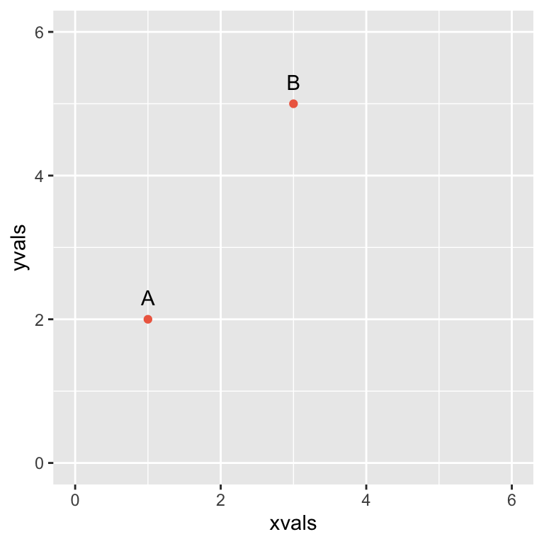
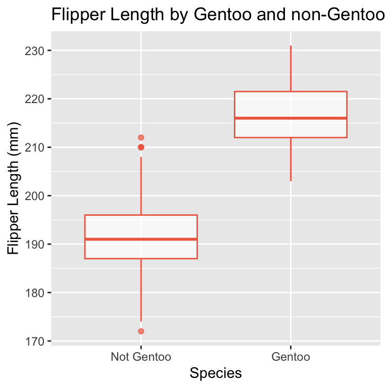
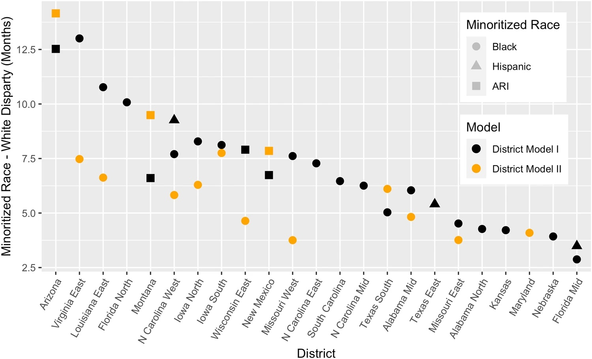

Regression Analysis
One main way that we analyze data is through fitting regressions. Regressions can be used to model the relationships between different explanatory variables and a chosen response variable. There are many kinds of regressions, but the most common and simplest regression is a simple linear regression. To explore linear regression, let’s first take a step back from the federal sentencing data, and turn to two simpler data sets for examples.
Fitting a line: The basics
Suppose we want to predict how much electricity the city of Los Angeles, California will use based on the daily temperature. As the temperature goes higher, more people will turn on their air conditioners and use more electricity. We can look at past electricity use data and compare it to the temperature each day to get a sense of how these two attributes are related. Knowing and understanding how two variables relate can help you plan for future possibilities or identify and correct patterns that you don’t want to continue. For example, we can use this relationship to makes predictions of how much electricity Los Angeles will use in the future if we know the future temperature, and make sure that there is enough for the city’s needs.
Let’s make two example points, point A at (1,2) and point B at (3,5). In R, we will save these points in a data frame using a vector of the x values, 1 and 3, and a vector of the matching y values, 2 and 5.
## xvals yvals label
## 1 1 2 A
## 2 3 5 BWe can make a fairly simple plot of these two points, using
geom_point() as we did in our EDA, and
geom_text() to label our points.
twoplot <- ggplot(twopoints, aes(x = xvals, y = yvals)) +
geom_point(color = "coral2") +
geom_text(aes(label = label), nudge_y = 0.3) +
xlim(0, 6) +
ylim(0, 6)
twoplot
Analytically fit a line to two points
In order to create a linear regression on these two points, we can think back to algebra and use the formula for a line.
\[ y = m x + b \]
Fitting our line to the data is straightforward and can be done in a number of ways. One way is that we can plug both points into the equation of the line and then solve the system together.
\[ \begin{aligned} 2 &= (1)m + b\\ 5 &= (3)m + b \end{aligned} \]
Here we have a system that has two equations and two unknowns (\(m\) and \(b\)), so we know this system has a unique solution! We can solve this system using a variety of techniques—try to solve this system using a technique you are comfortable with and verify that the solution below passes through each of the two points.
\[ y = \frac{3}{2} x + \frac{1}{2} \]
Next we can plot the results. Here we use the
geom_abline() function, to plot our linear equation which
can be done by inputting the values for the slope and the intercept.

Great! Notice that the line above goes right through our two data points.
Numerically fit a line to two points
If we want to reduce the amount of calculations required to fit a
line to two points, we can instead just rely on R to do the work for us.
We can use the linear model function lm() to carry out a
regression for us. We just input our yvals and
xvals along with our data twopoints to fit a
linear model using R.
##
## Call:
## lm(formula = yvals ~ xvals, data = twopoints)
##
## Coefficients:
## (Intercept) xvals
## 0.5 1.5Analytically fit a line to three points
We know that two points alone uniquely define a line, but what do we think will happen if we have to find a line that goes through three data points? Let’s add the point \((2, 3)\) to our existing set and see what happens when try to draw a line through all three points. Below, we will use R to plot the three points and make multiple attempts to fit a line. Don’t worry too much on the coding for now, but pay attention to the resulting plots.
threepoints <-
twopoints %>%
# Add third point to dataset
add_row(xvals = 2, yvals = 3, label = "C") %>%
# Generate y values for guesses of regression lines
mutate(yfit1 = xvals * 3/2 + 1/2,
yfit2 = xvals + 1,
yfit3 = xvals * 2 - 1)
# Plot data points with lines
threeplot <-
ggplot(threepoints, aes(x = xvals, y = yvals)) +
geom_point(color = "coral2") +
geom_text(aes(label = label),
nudge_y = 0.3,
check_overlap = TRUE) +
xlim(0,6) +
ylim(0,6)
# Display plots
grid.arrange(
threeplot +
geom_abline(slope = 3/2, intercept = 1/2) +
geom_segment(aes(xend = xvals,
yend = yfit1),
color = "coral2"),
threeplot +
geom_abline(slope = 1, intercept = 1) +
geom_segment(aes(xend = xvals,
yend = yfit2),
color = "coral2"),
threeplot +
geom_abline(slope = 2, intercept = -1) +
geom_segment(aes(xend = xvals,
yend = yfit3),
color="coral2"),
ncol = 3)
Notice in all three graphs above, we can’t draw a straight line through all three points at the same time. The best that we can do is try to find a line that gets very close to all three points, or fits these three points the best. But how can we define “the best” line that fits this data?
To understand which line best fits our three data points, we need to talk about the error, which is also called the residual in statistics. The residual is the vertical distance between the predicted data point \(\hat{y}\) (on the line) and the actual value of \(y\) our data takes on at that point (the value we collected). In our data set we have the points \((1, 2)\), \((2, 3)\), and \((3, 5)\) so the only actual values for \(y\) in our data set are 2, 3, and 5 even though our predicted line, or linear model, takes on all values of \(y\) between 0 and 6.
Numerically fit a line to three points
To find the model that best fits our data, we want to make the total
error as small as possible. To expand on our definition of linear
regression above, linear regression is a technique that allows us to
identify the line that minimizes our error. This line is called a
linear regression model and is the line that best fits our
data. Below, we use lm() again to fit our linear model to
the three data points.
##
## Call:
## lm(formula = yvals ~ xvals, data = threepoints)
##
## Coefficients:
## (Intercept) xvals
## 0.3333 1.5000Here R gives us the slope and intercept of the straight line that best fits our data. Let’s graph this line together with our data using the code below.
# Add predicted values (yhat) to data
threepoints <-
threepoints %>%
mutate(yhat = 1.5 * xvals + 0.3333)
ggplot(threepoints, aes(x = xvals, y = yvals)) +
geom_point(color = "coral2") +
geom_text(aes(label = label),
nudge_y = -0.4 ) +
xlim(0, 6) +
ylim(0, 6) +
geom_abline(slope = 1.5, intercept = 0.3333) +
geom_segment(aes(xend = xvals,
yend = yhat),
color = "coral2")
Notice that the best fit linear model doesn’t go through any of our three points! Why do you think that is?
Keep in mind, our goal is to minimize our error as much as we can. In each of the four previous graphs, the error (or the distance between the predicted y value and the actual y value) is shown on the graph, highlighted in the coral color. Of the four plots we just made of lines through our three data points, which one seems to have the smallest error?
Note: Whenever you employ linear regression, there are various conditions you must make sure are satisfied before proceeding. You can use the acronym L.I.N.E to remember that your residuals must satisfy Linearity, Independence, Normality, and Equal variance conditions. For the purposes of this tutorial, we won’t go in depth about what these conditions mean and how you can check these conditions, but make sure to keep them in mind for your future data analyses. Conditions are super important in statistical analysis!
Introduction to linear regression
Now let’s turn to another example data set to explore linear regression further. This new data set focuses on penguins. Do you think a linear model might be a good way to model the data? Run the code below load the new dataset and create a scatterplot showing the relationship between flipper length and body mass among penguins.
data(penguins)
pengplot <- ggplot(penguins, aes(x = body_mass_g, y = flipper_length_mm)) +
geom_point(color = "coral2", alpha = 0.7) +
labs(x = "Body Mass (grams)",
y = "Flipper Length (mm)",
title = "Flipper Length by Body Mass of Penguins")
pengplot
Take a look at the scatterplot: does it look like most of the data fall along a straight line? If the general shape is a line, then yes, we could try to model this data with linear regression.
##
## Call:
## lm(formula = flipper_length_mm ~ body_mass_g, data = penguins)
##
## Coefficients:
## (Intercept) body_mass_g
## 136.72956 0.01528
Summarizing a linear regression model
After we fit a linear regression model, we are often interested in
summarizing the model and assessing how good the model fits the data.
One function we can use for this is summary(). This
function provides an overview of the fitted model.
##
## Call:
## lm(formula = flipper_length_mm ~ body_mass_g, data = penguins)
##
## Residuals:
## Min 1Q Median 3Q Max
## -23.7626 -4.9138 0.9891 5.1166 16.6392
##
## Coefficients:
## Estimate Std. Error t value Pr(>|t|)
## (Intercept) 1.367e+02 1.997e+00 68.47 <2e-16 ***
## body_mass_g 1.528e-02 4.668e-04 32.72 <2e-16 ***
## ---
## Signif. codes: 0 '***' 0.001 '**' 0.01 '*' 0.05 '.' 0.1 ' ' 1
##
## Residual standard error: 6.913 on 340 degrees of freedom
## (2 observations deleted due to missingness)
## Multiple R-squared: 0.759, Adjusted R-squared: 0.7583
## F-statistic: 1071 on 1 and 340 DF, p-value: < 2.2e-16There is a lot of information that comes out of this function, but for now we will focus on the coefficients and the \(R^2\) value.
Interpreting coefficients for numerical predictors
In the middle of the summary output, the estimated coefficients are provided in the first column of the table. The intercept is \(b = 136.7\) and the slope is \(m = 0.015\).
While the intercept typically represents the average outcome when all predictors are 0, it doesn’t make sense in this case to talk about a penguin with a mass of 0 grams (impossible!), so we will not interpret the intercept.
The slope represents the change in the average outcome for a one unit increase in the value of the predictor. In this case, we would say that a one-gram increase in the mass of a penguin is associated with 0.015 mm longer flipper, on average.
Assessing model fit with \(R^2\)
Now focus on the bottom of the summary output and find the “Multiple R-squared” value. You probably found \(R^2 = 0.759\) from the table.
\(R^2\) represents the proportion of variation in the response variable that is explained by the explanatory variable(s) in your linear model. In our case, we found that 75.9% of the variation in flipper length can be explained by the body mass of penguins. That is a pretty high \(R^2\), especially for observational data! Therefore, we can already consider this model to be quite good for modeling flipper length.
Linear regression with a categorical predictor
So far we’ve only explored linear regression with numerical variables, but we can certainly use categorical variables in our model as well. Continuing with our penguins data, let’s compare flipper length to penguin species. Remember that flipper length is a numerical variable and species is a categorical variable with three levels: Adelie, Chinstrap, and Gentoo.
Binary categorical predictor
To start, let’s simplify the problem by considering species as only
“Gentoo” or “Not Gentoo”. We’ll use case_when() to create
this new binary variable (species2), then we’ll create a
side-by-side boxplot using geom_boxplot() to view the
relationship between flipper length and species.
penguins <-
penguins %>%
mutate(species2 = fct_collapse(species,
"Not Gentoo" = c("Adelie", "Chinstrap"))) %>%
drop_na()
adelieplot <- ggplot(penguins, aes(x = species2, y = flipper_length_mm)) +
geom_boxplot(color = "coral2",
alpha = 0.7) +
labs(x = "Species",
y = "Flipper Length (mm)",
title = "Flipper Length by Gentoo and non-Gentoo Species")
adelieplot
We can see that Gentoo penguins seem to have a longer flipper lengths, generally, than non-Gentoo penguins.
Next, we create a linear model for the same relationship.
##
## Call:
## lm(formula = flipper_length_mm ~ species2, data = penguins)
##
## Residuals:
## Min 1Q Median 3Q Max
## -19.9206 -4.9206 -0.9206 4.0794 20.0794
##
## Coefficients:
## Estimate Std. Error t value Pr(>|t|)
## (Intercept) 191.9206 0.4784 401.18 <2e-16 ***
## species2Gentoo 25.3147 0.8003 31.63 <2e-16 ***
## ---
## Signif. codes: 0 '***' 0.001 '**' 0.01 '*' 0.05 '.' 0.1 ' ' 1
##
## Residual standard error: 6.998 on 331 degrees of freedom
## Multiple R-squared: 0.7514, Adjusted R-squared: 0.7507
## F-statistic: 1001 on 1 and 331 DF, p-value: < 2.2e-16\(R^2\) in this case is interpreted in the same way. Find the \(R^2\) value for this model. Is it a good fit?
Yes, we see that \(R^2 = 0.7514\), which means that about 75% of the variability in flipper length is explained by whether or not the penguins are Gentoo penguins.
How do you think we interpret this model now? You may have noticed
that the predictor variable shows up a little differently than you might
expect in the coefficient table: it’s labeled
species2Gentoo rather than just species2. This
is actually a new indicator variable that R created to
fit the linear model! Because a linear model is a mathematical equation,
R converts our categorical variable into a numerical indicator
variable: it takes on the value 1 if the specified level after the
variable name is observed, and 0 otherwise. Our binary species variable
species2 was converted to an indicator variable labeled
species2Gentoo, which tells us:
\[ \texttt{species2Gentoo} = \begin{cases} 1 & \text{if the species is Gentoo}\\ 0 & \text{if the species is not Gentoo} \end{cases} \]
(Note: the indicator variable would be reversed if it were instead
labeled as species2Not Gentoo in the summary output.)
So how do we interpret the coefficients in this model? Let’s write out the equation of the regression line to figure it out:
\(\widehat{\text{Flipper Length}} = 191.9 + 25.3 (\text{Gentoo})\)
“Gentoo” in the equation above is our indicator variable
species2Gentoo. If we plug in a 0 for the “Gentoo”
indicator variable in the equation to get the predicted average flipper
length for non-Gentoo species (our reference level),
we have:
\(\widehat{\text{Flipper Length}} = 191.9 + 25.3 (0) = 191.9 \text{ mm}\)
Notice the predicted average here is exactly the intercept! This tells us that the intercept can be interpreted as the average outcome for the reference level of a categorical variable (whichever level takes on the value “0”).
If we plug in a 1 for “Gentoo” in the equation to get the predicted average flipper length for Gentoo species, we have:
\(\widehat{\text{Flipper Length}} = 191.9 + 25.3 (1) = 217.2 \text{ mm}\)
Notice the difference in these two predicted averages is exactly the slope: \(217.2 - 191.9 = 25.3\)! This tells us that the slope can be interpreted as the difference in the average outcome between the indicated level and the reference level. In our case, the flipper length of Gentoo species is, on average, 25.3 mm longer than the flipper length of non-Gentoo species.
Categorical predictor with more than 2 levels
Now let’s return to the original species variable with
three levels. Let’s see what happens when we fit the model with this
variable.
##
## Call:
## lm(formula = flipper_length_mm ~ species, data = penguins)
##
## Residuals:
## Min 1Q Median 3Q Max
## -18.1027 -4.8235 -0.1027 4.7647 19.8973
##
## Coefficients:
## Estimate Std. Error t value Pr(>|t|)
## (Intercept) 190.1027 0.5522 344.25 < 2e-16 ***
## speciesChinstrap 5.7208 0.9796 5.84 1.25e-08 ***
## speciesGentoo 27.1326 0.8241 32.92 < 2e-16 ***
## ---
## Signif. codes: 0 '***' 0.001 '**' 0.01 '*' 0.05 '.' 0.1 ' ' 1
##
## Residual standard error: 6.673 on 330 degrees of freedom
## Multiple R-squared: 0.7747, Adjusted R-squared: 0.7734
## F-statistic: 567.4 on 2 and 330 DF, p-value: < 2.2e-16What do you notice? What do you think has happened?
You should see that instead of a single predictor
species in the coefficient table, we have two new indicator
variables, speciesChinstrap and speciesGentoo.
But we know that species has three levels! Where did the
Adelie penguins go? Let’s think through the math again. For each
indicator variable we have:
\[ \texttt{speciesChinstrap} = \begin{cases} 1 & \text{if the species is Chinstrap}\\ 0 & \text{if the species is not Chinstrap} \end{cases} \] and \[ \texttt{speciesGentoo} = \begin{cases} 1 & \text{if the species is Gentoo}\\ 0 & \text{if the species is not Gentoo} \end{cases} \]
Well, if a species is not Chinstrap
(speciesChinstrap = 0) nor Gentoo
(speciesGentoo = 0), then it must be whatever species is
left: Adelie! In other words, the Adelie penguins have now become our
reference level of the species variable: the baseline
level against which every other species is compared. We can make
predictions for Adelie penguins by plugging in 0s for all the indicator
variables. Let’s see this in action!
The equation of the fitted regression line is now:
\(\widehat{\text{Flipper Length}} = 190.1 + 5.7 (\text{Chinstrap}) + 27.1 (\text{Gentoo})\)
First, let’s find the predicted average flipper length for Adelie penguins by plugging in 0s for each indicator variable:
\(\widehat{\text{Flipper Length}} = 190.1 + 5.7 (0) + 27.1 (0) = 190.1 \text{ mm}\)
Next, let’s find the predicted average flipper length for Chinstrap penguins by plugging in 1 for “Chinstrap” and 0 for “Gentoo”:
\(\widehat{\text{Flipper Length}} = 190.1 + 5.7 (1) + 27.1 (0) = 195.8 \text{ mm}\)
Finally, let’s find the predicted average flipper length for Gentoo penguins by plugging in 0 for “Chinstrap” and 1 for “Gentoo”:
\(\widehat{\text{Flipper Length}} = 190.1 + 5.7 (0) + 27.1 (1) = 217.2 \text{ mm}\)
Using these predicted average values, we can make the following connections:
- The intercept captures the average outcome for the reference level of the categorical variable.
- The slope of each indicator variable captures the
difference in the average outcome between the indicated level and the
reference level.
- For example, if we take the predicted average flipper length of
Chinstrap penguins (195.8 mm) and subtract the predicted average flipper
length of Adelie penguins (190.1 mm), we get the slope for
speciesChinstrap(5.7). - In other words, we could interpret the Chinstrap indicator variable coefficient as: “The flipper length of Chinstraps species is, on average, 5.7 mm longer than the flipper length of Adelie species.”
- For example, if we take the predicted average flipper length of
Chinstrap penguins (195.8 mm) and subtract the predicted average flipper
length of Adelie penguins (190.1 mm), we get the slope for
- The difference in slopes between two indicator variables will
provide the average difference in the outcome between those two levels.
- For example, if we take the predicted average flipper length of Gentoo penguins (217.2 mm) and subtract the predicted average flipper length of Chinstrap penguins (195.8 mm), we get 21.4. This is the same as taking the difference in the two corresponding slopes: \(27.1 - 5.7 = 21.4\).
These pairwise comparisons or contrasts of average
flipper length across all three species can be done more quickly in R
using the emmeans() function of the
emmeans package, as shown below. To use this function,
you need to provide only the name of the fitted linear model
(species_lm) and which variable contains the levels you
want to compare (species).
## contrast estimate SE df t.ratio p.value
## Adelie - Chinstrap -5.72 0.980 330 -5.840 <.0001
## Adelie - Gentoo -27.13 0.824 330 -32.925 <.0001
## Chinstrap - Gentoo -21.41 1.014 330 -21.109 <.0001
##
## P value adjustment: tukey method for comparing a family of 3 estimatesThe resulting table lists the contrast (which two groups are being compared and what is the order of subtraction), the estimated difference in the average outcome between the two groups, and some additional statistics summarizing the results of a type of \(t\) test. In this case, because all of the p-values are so small, we have evidence to conclude that flipper lengths significantly differ between each of the three species of penguins.
Multiple linear regression
Similar to how we were able to build up to plots with three or four variables, a multiple linear regression model allows us to consider the relationship between an outcome and multiple predictors at the same time. This is better than fitting a different model for every predictor of interest. We can add predictors to our linear regression model by simply using the plus sign in the linear model formula. Run the code below to see how we model flipper length as a function of both penguin species and body mass.
##
## Call:
## lm(formula = flipper_length_mm ~ species + body_mass_g, data = penguins)
##
## Residuals:
## Min 1Q Median 3Q Max
## -14.5418 -3.1804 0.0983 3.3295 17.3954
##
## Coefficients:
## Estimate Std. Error t value Pr(>|t|)
## (Intercept) 1.585e+02 2.435e+00 65.119 < 2e-16 ***
## speciesChinstrap 5.492e+00 7.938e-01 6.918 2.4e-11 ***
## speciesGentoo 1.533e+01 1.117e+00 13.727 < 2e-16 ***
## body_mass_g 8.515e-03 6.457e-04 13.186 < 2e-16 ***
## ---
## Signif. codes: 0 '***' 0.001 '**' 0.01 '*' 0.05 '.' 0.1 ' ' 1
##
## Residual standard error: 5.405 on 329 degrees of freedom
## Multiple R-squared: 0.8526, Adjusted R-squared: 0.8513
## F-statistic: 634.4 on 3 and 329 DF, p-value: < 2.2e-16Notice we now have three variables in the coefficient table: the two indicator variables we discussed before and the numerical predictor, body mass. We have also explained more of the variation in flipper length by including both species and body mass as predictors in the model rather than either one alone (\(R^2 = 0.8526\)). Because we have multiple predictors, interpretations of slopes now depend on the other variables in the model. For example, we would now interpet the coefficient for body mass as: “After adjusting for the species of a penguin, a one-gram increase in the mass of a penguin is associated with 0.015 mm longer flipper, on average.” Similarly, we could interpret the Chinstrap indicator variable coefficient as: “After adjusting for the body mass of a penguin, the flipper length of Chinstraps species is, on average, 5.5 mm longer than the flipper length of Adelie species.”
Linear Regression with the Federal Criminal Sentencing Data
Now that we’ve explored the basics of linear regression using both numerical and categorical variables, let’s return to the goal of this project: to explore patterns in federal criminal sentencing data from 2006-2020. We will show how to create relevant linear models for this data, and discuss the results of these models in the following section. We won’t dive into the specifics of how we determined which variables to include in the linear regression model. Rather, we will simply replicate the results of original study, Federal Criminal Sentencing: Race-Based Disparate Impact and Differential Treatment in Judicial Districts.
Baseline model
Let’s start with a simple model to see how sentence length changes by race alone, without considering any other factors.
##
## Call:
## lm(formula = sentence_length ~ race, data = us_sent)
##
## Residuals:
## Min 1Q Median 3Q Max
## -74.34 -48.34 -20.49 22.66 423.15
##
## Coefficients:
## Estimate Std. Error t value Pr(>|t|)
## (Intercept) 74.3435 0.1668 445.78 <2e-16 ***
## raceHispanic -13.2529 0.2774 -47.77 <2e-16 ***
## raceARI -27.4939 0.4607 -59.67 <2e-16 ***
## raceWhite -18.5143 0.2300 -80.48 <2e-16 ***
## ---
## Signif. codes: 0 '***' 0.001 '**' 0.01 '*' 0.05 '.' 0.1 ' ' 1
##
## Residual standard error: 71.47 on 518715 degrees of freedom
## Multiple R-squared: 0.01549, Adjusted R-squared: 0.01549
## F-statistic: 2721 on 3 and 518715 DF, p-value: < 2.2e-16Already, we can use some of the methods we used above to summarize the model. How does sentence length seem to differ by race? Considering the \(R^2\), is this a good model for our data?
Recall that the race variable has four categories: Black, Hispanic, White, and another race indicated (ARI). Based on the model output, “Black” is missing from the indicator variables, which tells us that Black defendants are the reference level. Because all of the coefficients are negative, we know that Black defendants tended to have longer sentences, on average, than defendants of every other race. For example, the average sentence length of Black defendants is about 18.5 months longer than the average sentence of White defendants.
We can explore these differences further by obtaining 95% confidence
intervals for the coefficients using confint() (see the
previous case study on Diversity
of Artists in Major U.S. Museums for a discussion of confidence
intervals):
## 2.5 % 97.5 %
## (Intercept) 74.01661 74.67034
## raceHispanic -13.79668 -12.70915
## raceARI -28.39691 -26.59086
## raceWhite -18.96520 -18.06347This allows us to estimate the coefficients with some degree of error. Using the same example as before and the bottom row of the table of confidence intervals, we would say we are 95% confident that the average sentence length of Black defendants is between 18.1 and 19 months longer than the average sentence of White defendants.
Returning to the model summary output, you may have noticed that the Multiple \(R^2\) is relatively low, indicating that our model using only race as a predictor accounts for only 1.5% of the variation in sentence length. Do you think we can make a better model using more variables to predict sentence length? Of course! Let’s jump into replicating one of the models in the original study.
Replicating Model 11, District Model II
Alright, let’s try to improve our model by adding more predictors. In particular, we hope to replicate—in part—Model 11 from Table 2 of the original study, fit separately within each district as shown in Figure 2 (District Model 2).
Model 11 includes 9 predictors: race, age, sex, and education level
(educ) of the defendant, year of the sentencing, whether or
not the defendant entered a guilty plea (guilty_plea),
where the case falls in the U.S. sentencing grid
(grid_cell: found by by crossing each level of the criminal
history variable with each possible adjusted offense level rating),
whether there was a mandatory minimum sentence
(mandatory_min), and finally the presence of
government-sponsored downward departures (gov_departures).
This model assumes that all districts, on average, apply the U.S.
sentencing grid in the same way.
We’ll start by looking at the results just for Arizona. The code for
formulating this linear regression model would follow the same format as
the other linear models we’ve fit, but we can add an argument to
subset the data to only consider the Arizona district:
model11_az <- lm(sentence_length ~ race + age + sex + educ + year +
mandatory_min + guilty_plea + grid_cell + gov_departures,
data = us_sent,
subset = (district == "Arizona"))You can take a look at the full model summary output on your own—we are omitting the summary from this document because, as you can imagine, it becomes quite long with so many categorical variables in the model. However, the code below allows us to pull out the \(R^2\) value and view only the first 9 rows of the table of coefficients, which includes only the demographic predictors:
## [1] 0.7245824# View partial model results
tidy(model11_az, conf.int = TRUE) %>%
slice(1:9) %>%
kable(booktabs = TRUE, digits = 3)| term | estimate | std.error | statistic | p.value | conf.low | conf.high |
|---|---|---|---|---|---|---|
| (Intercept) | 9.818 | 2.403 | 4.086 | 0.000 | 5.108 | 14.528 |
| raceHispanic | -0.788 | 1.116 | -0.706 | 0.480 | -2.976 | 1.399 |
| raceARI | 12.660 | 1.163 | 10.882 | 0.000 | 10.380 | 14.941 |
| raceWhite | -1.495 | 1.156 | -1.293 | 0.196 | -3.761 | 0.771 |
| age | 0.020 | 0.024 | 0.828 | 0.407 | -0.027 | 0.067 |
| sexFemale | -6.569 | 0.619 | -10.612 | 0.000 | -7.782 | -5.356 |
| educHS Grad | -0.731 | 0.602 | -1.214 | 0.225 | -1.910 | 0.449 |
| educSome College | -3.455 | 0.748 | -4.620 | 0.000 | -4.921 | -1.989 |
| educCollege Grad | -8.061 | 1.436 | -5.613 | 0.000 | -10.876 | -5.246 |
First, we notice that Model 11 results in a much higher \(R^2\) than our baseline model! Of course it makes sense that including more variables explains more of the variability in sentencing length, but we did quite well with an \(R^2\) of 0.725!
Next, because we are primarily interested in race-based disparities after adjusting for all of the other predictors in the model, we dig deeper into how sentencing lengths differ by race. The pairwise comparisons are provided below, after averaging over every other predictor variable in Model 11 (listed as nuisance factors below to ease computation).
emmeans(model11_az, pairwise ~ race,
nuisance = c("sex", "educ", "year", "mandatory_min",
"guilty_plea", "grid_cell", "gov_departures"))$contrasts## contrast estimate SE df t.ratio p.value
## Black - Hispanic 0.788 1.116 12421 0.706 0.8947
## Black - ARI -12.660 1.163 12421 -10.882 <.0001
## Black - White 1.495 1.156 12421 1.293 0.5674
## Hispanic - ARI -13.448 0.676 12421 -19.880 <.0001
## Hispanic - White 0.707 0.709 12421 0.996 0.7515
## ARI - White 14.155 0.777 12421 18.213 <.0001
##
## Results are averaged over the levels of: 7 nuisance factors
## P value adjustment: tukey method for comparing a family of 4 estimatesNotice that the only comparisons with very small p-values all involve ARI, with the biggest difference in average sentencing length (approximately 14 months) occurring between White and ARI defendants. This difference is highlighted by the orange square in the first column of Figure 2, linked here and shown below.

Let’s repeat this process for the “Virginia East” district to see if we can replicate the second column in Figure 2:
# Fit Model 11 in Virginia East
model11_vae <- lm(sentence_length ~ race + age + sex + educ + year +
mandatory_min + guilty_plea + grid_cell + gov_departures,
data = us_sent,
subset = (district == "Virginia East"))
# Grab R-squared
summary(model11_vae)$r.squared## [1] 0.8324298# Look at comparisons across race
emmeans(model11_vae, pairwise ~ race,
nuisance = c("sex", "educ", "year", "mandatory_min",
"guilty_plea", "grid_cell", "gov_departures"))$contrasts## contrast estimate SE df t.ratio p.value
## Black - Hispanic 8.072 1.663 10132 4.855 <.0001
## Black - ARI 7.810 2.023 10132 3.861 0.0007
## Black - White 7.475 0.931 10132 8.032 <.0001
## Hispanic - ARI -0.263 2.480 10132 -0.106 0.9996
## Hispanic - White -0.597 1.726 10132 -0.346 0.9857
## ARI - White -0.335 2.019 10132 -0.166 0.9984
##
## Results are averaged over the levels of: 7 nuisance factors
## P value adjustment: tukey method for comparing a family of 4 estimatesWhat do you notice with these results? Which racial groups have the biggest estimated difference in average sentence length? Which comparison is highlighted in Figure2?
We could repeat this process across each district to fill in the remainder of the District Model II comparisons highlighted in orange in Figure 2. Try a few more districts on your own to see if you can replicate more points in the figure!